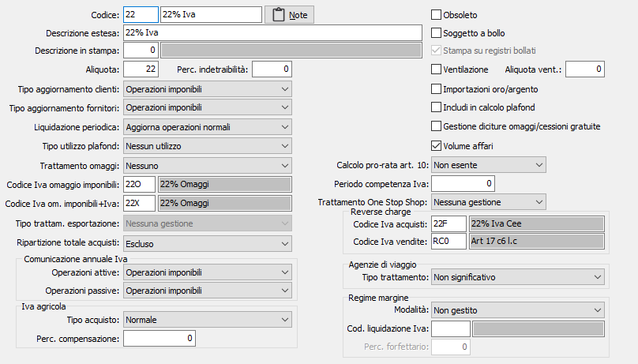

Aliquote Iva
Le aliquote Iva sono necessarie per le registrazioni contabili e per l'emissione di tutti i documenti che prevedono l'addebito dell'Iva o di un titolo di esenzione o di non imponibilità. Questa tabella deve pertanto essere compilata da tutti gli utenti.
Occorre qui ricordare, per gli utenti che utilizzano la procedura contabilità, l'opportunità di attivare più codici Iva contenti la stessa aliquota Iva per facilitare la determinazione dei totali annuali da riportare in dichiarazione annuale Iva. Ad esempio, l'aliquota 21% potrebbe avere i seguenti codici:
22 = Iva 22%
22I = Iva 22% non detraibile al 100%
22P = Iva 22% non detraibile al 50%
22C = Iva 22% Intra (solo per la gestione degli acquisti intracomunitari)
22O = Iva 22% Omaggio
22E = Iva 22% Autofattura art. 17
22T = Iva 22% Trasportatori

CODICE: codice alfanumerico di 3 caratteri, a scelta dell'utente, che identifica l'aliquota Iva. Su questo campo sono attive le funzioni di ricerca.
DESCRIZIONE: campo alfanumerico di 14 caratteri per descrivere sinteticamente l'aliquota Iva o il titolo di esenzione / non imponibilità. Questa descrizione viene stampata sia sulle fatture di vendita che sui registri Iva.
NOTE: accede al campo note per eventuali ulteriori descrizioni, ad uso dell'utente, in merito alle modalità di applicazione ed utilizzo dell'aliquota in esame.
DESCRIZIONE ESTESA: campo alfanumerico di 50 caratteri per descrivere più dettagliatamente l'aliquota Iva o il titolo di esenzione / non imponibilità. Questa descrizione, ad uso dell'utente, viene visualizzata nelle finestre di ricerca delle aliquote Iva in contabilità e in inserimento documenti, e contiene le informazioni utili all'utente per individuare con maggior precisione l'aliquota da utilizzare.
DESCRIZIONE IN STAMPA: codice relativo alla tabella testi stampe da poter collegare all'aliquota IVA per essere, riportato sulla stampa delle fatture.
DESCRIZIONE IN STAMPA: indica il testo da riportare per la descrizione estesa relativa al titolo di esenzione, oppure relativa anche alle altre codifiche se opportunamente configurato, nella stampa della fattura; nel caso di esenzione con lettera di intento la dicitura sarà completata, in automatico dalla procedura di stampa, con gli estremi della lettera di intento.
ALIQUOTA: campo numerico di 3 interi e 2 decimali per inserire l'aliquota Iva da applicare per il calcolo dell'imposta. Per i codici riferiti a operazioni esenti, non imponibili e non soggette questo campo deve assumere il valore 0 (zero).
% INDETRAIBILITÀ: campo numerico di 3 interi e 2 decimali per indicare l'eventuale percentuale di indetraibilità dell'imposta (100=Iva indetraibile al 100%; 50=Iva indetraibile al 50%).
TIPO AGGIORNAMENTO CLIENTI: combo box per determinare il modo in cui vengono totalizzati gli imponibili soggetti alle varie aliquote. Valori possibili:
nessuna operazione: non totalizza (vale per art. 15, art. 2, e simili)
operazioni imponibili: vengono incrementati i totali imponibile e Iva;
operazioni non imponibili: vengono incrementati i totali non imponibili (art. 8, 9, 40, 41 e simili);
operazioni esenti: vengono incrementati i totali esenti (art. 10, 72 editoria, e simili);
TIPO AGGIORNAMENTO FORNITORI: combo box per determinare il modo in cui vengono totalizzati gli imponibili soggetti alle varie aliquote. Valori possibili:
nessuna operazione: non totalizza (vale per art. 15, art. 2, e simili)
operazioni imponibili: vengono incrementati i totali imponibile e Iva;
operazioni non imponibili: vengono incrementati i totali non imponibili (art. 7/2, 8, 9, e simili);
operazioni esenti: vengono incrementati i totali esenti (art. 10, 72 editoria, e simili);
LIQUIDAZIONE PERIODICA: combo box per determinare la "casella" della liquidazione periodica Iva in cui vengono totalizzati gli imponibili delle fatture o dei corrispettivi registrati. Valori possibili:
nessun aggiornamento: non totalizza (vale per art. 15, art. 2, e simili)
aggiorna operazioni normali
aggiorna operazioni CEE/Reverse charge (vale per aliquote Intra, art 40 e art 41 e tutte le operazioni in reverse charge)
TIPO UTILIZZO PLAFOND: determina l'azione dell'aliquota in esame sui calcoli del plafond. Valori possibili:
nessun utilizzo
tutti gli acquisti
solo le importazioni.
TRATTAMENTO OMAGGIO: definisce se l'aliquota è un'aliquota omaggio ed il tipo di omaggio trattato; solo imponibile oppure imponibile + Iva.
CODICE IVA OMAGGIO IMPONIBILE: se presente, consente di specificare il codice Iva per gli omaggi di solo imponibile.
CODICE IVA OMAGGIO IMPONIBILE + IVA: se presente, consente di specificare il codice Iva diverso per gli omaggi di imponibile ed Iva.
TIPO TRATTAMENTO ESPORTAZIONI: definisce il tipo di gestione (a livello di ciclo attivo) a cui il codice Iva è destinato nel caso di cessioni all'esportazione. Casi previsti:
Nessuna gestione: il codice Iva non tratta operazioni di esportazione
Esportatore abituale: il codice Iva è relativo ad operazioni coperte da dichiarazione d'intento (art. 8, art. 8-bis e art. 9 del DPR. 633/72).
Cessione intracomunitaria: il codice Iva è relativo ad operazioni di cessioni a clienti CEE (art. 41 DL 331/1993)
Ripartizione totale acquisti: Definisce come ripartire i sottoconti per il totale degli acquisti da dichiarare nel modello Iva. I valori possibili sono:
Beni ammortizzabili
Beni strumentali non ammortizzabili
Beni destinati alla rivendita ovvero alla produzione di beni e servizi
Altri acquisti
Escluso
STAMPA SU REGISTRI BOLLATI: indica se il codice IVA deve essere stampato sul registro bollato (casella con segno di spunta). Attivo solo per i codice con aliquota zero e che non siano configurati per la gestione dell'IVA sull'editoria.
VENTILAZIONE: flag attivabile dall'utente. È riservato agli utenti che determinano l'Iva a debito tramite la ventilazione dei corrispettivi. Va attivato sulle aliquote Iva utilizzate per registrare gli "acquisti ventilabili", ovvero utilizzati per il calcolo delle percentuali di ventilazione. Ne consegue che per la stessa percentuale Iva possono esistere due diversi codici: uno, privo di flag, da utilizzare per gli acquisti non significativi per la ventilazione (spese, costi generali o merci ad aliquota certa) e un secondo, con flag attivo, da utilizzare per gli acquisti di merci ad aliquota ventilabile.
ALIQUOTA DI VENTILAZIONE: campo numerico di 3 interi e 2 decimali, significativo solo se il flag precedente è attivo, per indicare l'eventuale percentuale Iva, diversa da quella in esame, con cui deve essere eseguita la ventilazione. Serve agli utenti che effettuano la macellazione delle carni che acquistano gli animali vivi ad una determinata percentuale di Iva e vendono le carni macellate al dettaglio soggette ad una percentuale diversa.
IMPORTAZIONI ORO/ARGENTO: utilizzato nella dichiarazione Iva periodica, indica se devono essere incrementati i progressivi del periodo relativi alle importazioni di oro e argento.
SOGGETTO A BOLLO: flag, attivabile dall'utente e significativo in caso di aliquote esenti o non soggette, per determinare l'addebito dell'importo della marca da bollo in caso di emissione delle fatture di vendita tramite la procedura di Vendite.
INCLUDI IN CALCOLO PLAFOND: Indica, se spuntato, che le vendite ed i corrispettivi relativi all'aliquota concorrono alla formazione del plafond dell'esportatore abituale.
GESTIONE DICITURE OMAGGI/CESSIONI GRATUITE: indica se calcolare il valore degli omaggi/cessioni gratuite e stampare le diciture previste per omaggi e/o cessioni gratuite su Ddt e fatture (casella con segno di spunta).
VOLUME AFFARI: definisce se include le operazione che utilizzano questo codice Iva nel calcolo del volume di affari (casella con segno di spunta), oppure esclude tali operazioni dal calcolo (casella vuota).
CALCOLO PRO-RATA ART. 10: il campo ha valore solo se attiva la gestione del pro-rata e definisce se il codice Iva e di conseguenza l'ammontare delle operazioni ad esso collegate, deve considerarsi non esente, esente Art. 10 oppure debba essere escluso dal calcolo del pro-rata.
PERIODO COMPETENZA IVA: indica, se diverso da zero, il numero di giorni di differimento per il calcolo della competenza Iva.
Trattamento One Stop Shop: indica il regime a cui appartiene l’aliquota tra: nessuna gestione, regime OSS e regime IOSS. La casella è attiva solo per codici Iva con aliquota diversa da zero. Il campo è presente se impostata almeno una delle date di inizio adesione in configurazione; i valori contenuti nell’elenco saranno visibili in base alle date impostate. Se viene selezionato uno dei due regimi, al salvataggio viene automaticamente impostato il campo Liquidazione periodica a “Nessun aggiornamento”. Se il codice Iva è presente nella tabella codici Iva per nazioni UE il campo sarà disabilitato e non sarà possibile cancellarlo. Per i codici Iva per cui è attivo uno dei due regimi anche l’eventuale codice Iva omaggio associato dovrà essere coerente e quindi appartenere allo stesso regime.
REVERSE CHARGE - CODICE IVA ACQUISTI: se presente, indica il codice Iva per gli acquisti utilizzato come proposta sull'anagrafica articolo quando viene attivato il flag "Tratta reverse charge".
REVERSE CHARGE - CODICE IVA VENDITE: se presente, indica il codice Iva per le vendite utilizzato come proposta sull'anagrafica articolo quando viene attivato il flag "Tratta reverse charge".
COMUNICAZIONE ANNUALE IVA - OPERAZIONI ATTIVE: combo box per determinare dove devono essere totalizzati gli imponibili soggetti alle varie aliquote relativamente alle operazioni attive da inserire nella comunicazione annuale IVA. Valori possibili:
escluso
operazioni imponibili
operazioni non imponibili
operazioni esenti
cessioni intracomunitarie
cessioni intracomunitarie da reverse change
COMUNICAZIONE ANNUALE IVA - OPERAZIONI PASSIVE: combo box per determinare dove devono essere totalizzati gli imponibili soggetti alle varie aliquote relativamente alle operazioni passive da inserire nella comunicazione annuale IVA. Valori possibili:
escluso
operazioni imponibili
operazioni non imponibili
operazioni esenti
acquisti intracomunitarie
IVA AGRICOLA - TIPO ACQUISTO: presente solo se in configurazione è attiva la gestione dell'IVA agricola; definisce il tipo di calcolo da applicare per il calcolo della liquidazione nel caso di regime Iva agricolo. Casi previsti:
Normale: viene utilizzato sia per la registrazione degli acquisti non inerenti la gestione tipica e per la registrazione delle vendite soggette a compensazione
Acquisti da soci agevolati in regime di non esonero: utilizzato nel caso di cooperativa per individuare gli acquisti/conferimenti da parte dei soci agevolati in regime di non esonero
Acquisti da soci agevolati in regime di esonero: utilizzato nel caso di cooperativa per individuare gli acquisti/conferimenti da parte dei soci agevolati in regime di esonero
Acquisti da soci non agevolati: utilizzato nel caso di cooperativa per individuare gli acquisti/conferimenti da parte dei soci non agevolati in regime di non esonero o altri acquisti della gestione tipica.
Altri acquisti: viene utilizzato nel caso di cooperativa per individuare altri acquisti.
IVA AGRICOLA - PERCENTUALE COMPENSAZIONE: presente solo se in configurazione è attiva la gestione dell'IVA agricola; definisce la percentuale da utilizzare per la determinazione dell'Iva a credito rispetto alla vendita stessa.
AGENZIE DI VIAGGIO - TIPO TRATTAMENTO: presente solo se in configurazione è attiva la gestione delle Agenzie di Viaggio; definisce il tipo di trattamento da utilizzare nel caso di liquidazione Iva per agenzie di viaggio. Casi previsti:Per le aliquote relative alla registrazione dei corrispettivi il campo può assumere i seguenti valori:
Per le aliquote relative alla registrazione dei costi il campo può assumere i seguenti valori:
Costi CEE viaggi CEE
Costi ExtraCEE viaggi ExtraCEE
Costi CEE viaggi misti
Costi ExtraCEE viaggi misti
Per le aliquote relative alla registrazione dei corrispettivi il campo può assumere i seguenti valori:
Ricavi viaggi CEE
Ricavi viaggi ExtraCEE
Ricavi viaggi misti
REGIME MARGINE - MODALITÀ: Definisce la tipologia di regime adottata: Non gestito, Analitico, Forfettario o Globale. La tipologia deve essere coerente con la gestione del margine impostato in configurazione:
Configurazione |
Modalità margine |
Margine analitico |
Margine analitico Margine forfettario |
Margine forfettario |
Margine forfettario |
Margine globale |
Margine globale Margine analitico Margine forfettario |
REGIME MARGINE - COD. LIQUIDAZIONE IVA: E' il codice Iva in cui deve essere definita l'aliquota iva con cui deve essere generata la liquidazione iva. Tale campo è obbligatorio per le aliquote su cui è impostato il tipo aggiornamento clienti a "Operazioni imponibili", quindi le aliquote relative alle vendite. L'aliquota inserita in questo campo deve avere il campo "Liquidazione periodica" diverso da "Non aggiornare", la "Perc. Indetraibilità" uguale a 0 e il campo "Aliquota" diversa da 0.
REGIME MARGINE - PERCENTUALE FORFETTARIO: Attiva solo nel caso di gestione del regime del margine forfettario, definisce la percentuale da utilizzare per la determinazione dell'Iva.
OBSOLETO: flag attivabile dall'utente per inibire il possibile utilizzo dell'elemento di tabella in esame nelle successive transazioni.